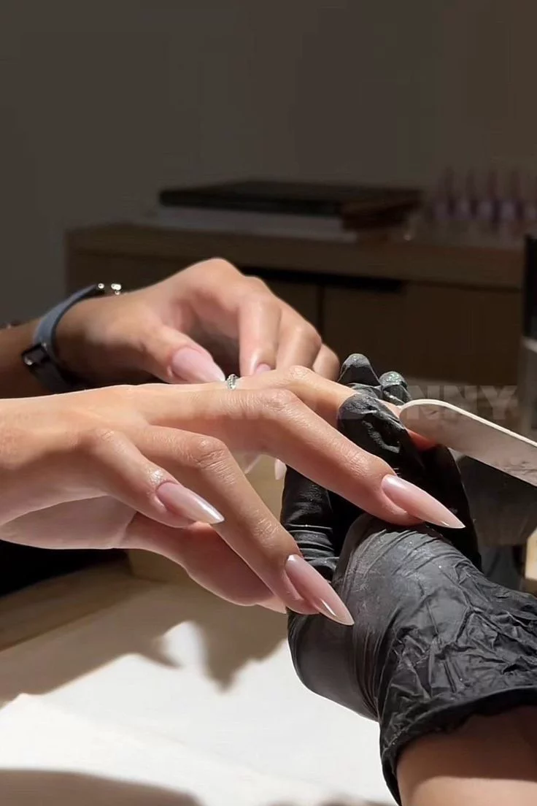

Sellado de borde libre: Pasa el pincel horizontalmente por el borde de la punta de la uña en cada capa. Esto evita que el esmalte se levante o se "encoja".
La Regla de los 3 trazos: Deposita una gota cerca de la cutícula, empújala suavemente hacia atrás (sin tocar la piel) y desliza hacia el centro, luego un trazo a la izquierda y uno a la derecha.
Capas delgadas: Es mejor aplicar dos capas finas que una gruesa. Si la capa es muy gorda, el esmalte se arruga o se desprende rápido.
Control del pincel: Mantén el pincel a un ángulo de 45°. Si lo aplanas mucho, barres el color; si lo pones muy vertical, dejas surcos.
Limpieza inmediata: Si llegas a tocar la piel, limpia el exceso con un palito de naranjo antes de meter la mano a la lámpara. Una vez seco, es mucho más difícil de quitar.
